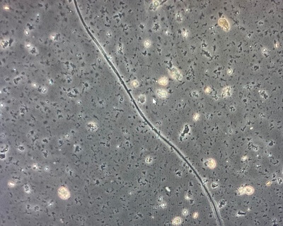

Cable bacteria are unique, filamentous microorganisms that can transport electrons over centimeter-scale distances within sediment. This capability has fascinated researchers in fields ranging from environmental engineering to bioelectronics. Cable bacteria play a significant role in biogeochemical cycling by transferring electrons through their structure, allowing distinct redox reactions at different parts of the filament.

Microscopy image of a cable bacterium; scale bar 10µm. Source: Original image captured by the author at the Center for Electromicrobiology.
Structure and Metabolism
Cable bacteria are multicellular, filamentous bacteria with a unique structure that supports long-distance electron transport. Each cable bacterium filament is composed of hundreds to thousands of individual cells connected in a chain-like formation. The cells work together, enabling electron transport from one end of the filament, where oxidation occurs, to the opposite end, where reduction reactions take place.
This separation of oxidation and reduction is a remarkable metabolic feature, allowing cable bacteria to tap into redox gradients in sediment and efficiently generate energy. The conductive fibers, known as e-pili, within these bacteria are critical for their ability to transport electrons over long distances.
Schematic representation of cable bacteria. A: Cross-section of a cable bacterium cell; B: transverse cross-section at a junction; C: a 3-D view of a cell, connected.
Source: Wikimedia.
Long-Distance Electron Transport (LDET) Mechanism
One of the most fascinating aspects of cable bacteria is their ability to perform Long-Distance Electron Transport (LDET). LDET allows cable bacteria to conduct electrons over distances up to 2-3 centimeters within sediment. This process is facilitated by conductive protein filaments within the bacteria, enabling efficient electron flow across cells.
In LDET, cells at one end of the filament oxidize sulfide in anaerobic (oxygen-free) conditions, while cells at the other end reduce oxygen in aerobic (oxygenated) conditions. This spatial separation of redox reactions across the filament enables cable bacteria to exploit redox gradients in their environment, a feature that holds great potential for applications in bioremediation and bioelectronics.
Schematic of cable bacteria showing typical sediment depth-profiles of O2 (red), H2S (green), and pH (black). Also shown in italics are the anodic and cathodic half-equations for cable bacteria metabolism and the proposed reactions involving the N cycle: denitrification and DNRA at the cathode (A), Fe-DNRA at the pH minimum (B), and anoxic nitrification (NIT) at the anode (C).
Due to their unique properties, cable bacteria hold promise for several applications in environmental and engineering fields:
Bioremediation: Cable bacteria can reduce toxic sulfide levels in environments such as rice paddies and seagrass beds, potentially mitigating harmful effects on plant roots and promoting healthier ecosystems.
Nutrient Cycling: By mobilizing phosphates and iron, cable bacteria enhance nutrient availability, contributing to sediment health and productivity.
Methane Reduction: In rice paddies, cable bacteria compete with methanogens, reducing methane emissions, which is significant for addressing greenhouse gas effects.
Bioelectronics: Their conductive properties have inspired interest in biodegradable electronics, where cable bacteria may play a role in developing sustainable bioelectronic devices.
Potential applications of cable bacteria in environmental and technological fields
The discovery of cable bacteria is relatively recent. In 2010, Lars Peter Nielsen from Aarhus University first observed them while studying sediments rich in hydrogen sulfide. When electrical currents were detected in the mud, researchers identified thin, filamentous bacteria responsible for this phenomenon, now known as cable bacteria.
Through genetic sequencing, these organisms have been classified in the family Desulfobulbaceae, which includes both sulfate-reducing and sulfide-oxidizing microbes. They are categorized under the genera "Candidatus Electrothrix" for marine species and "Candidatus Electronema" for freshwater species, highlighting their adaptability to diverse environments.